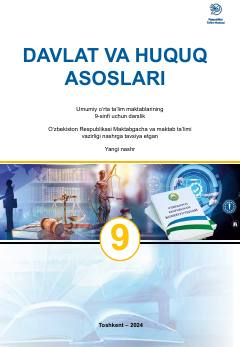

DV9-sinf o'quvchilari uchun davlat va huquq asoslari fanidan darslik.
Mazkur darslik umumiy o'rta ta'lim maktablarining 9-sinf o'quvchilari uchun mo'ljallangan bo'lib, davlat va huquq asoslari, jumladan Konstitutsiya, fuqarolik va inson huquqlari haqida tushuncha beradi. Kitobda O'zbekiston Respublikasining asosiy qonuni, davlat hokimiyati organlari hamda fuqarolik jamiyati asoslari yoritilgan. O'quvchilar ushbu darslik yordamida o'z huquq va erkinliklarini o'rganishadi.